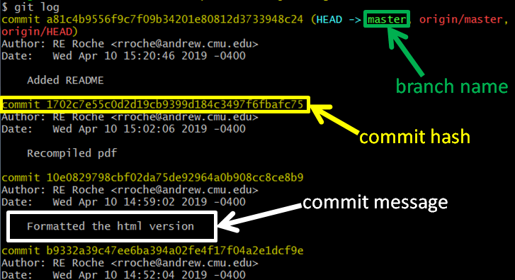
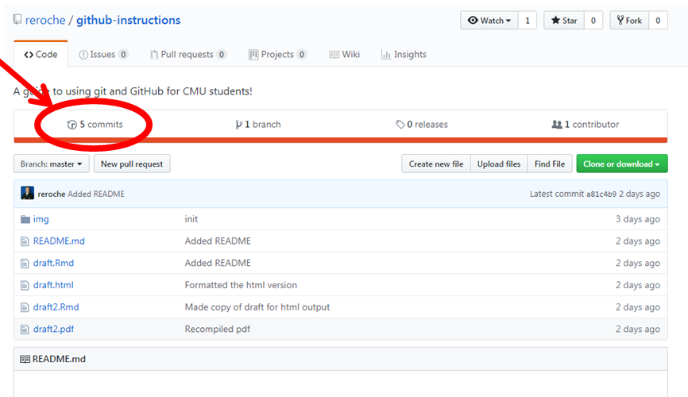
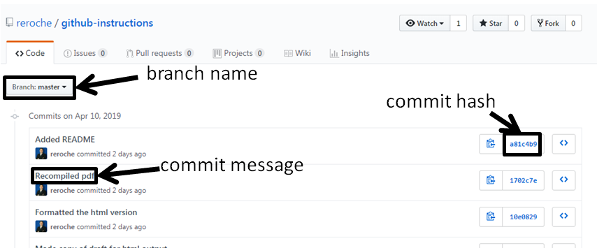
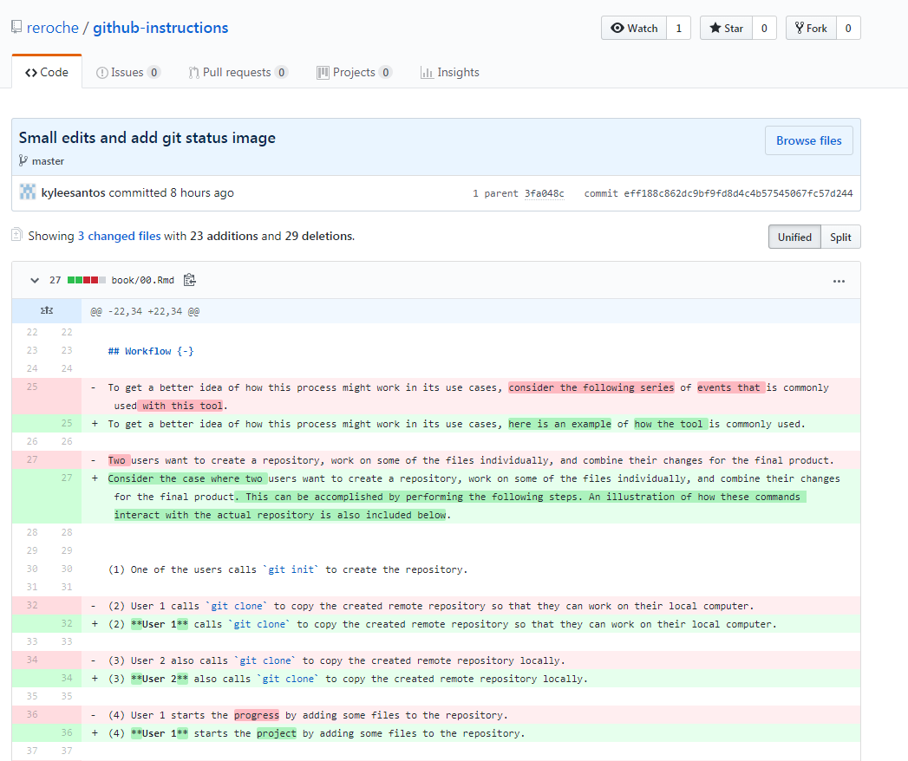
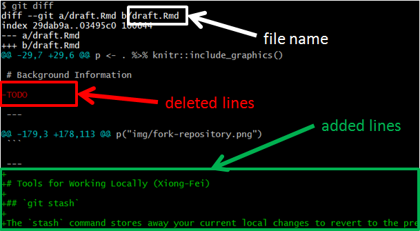

3 Tools for Working Locally (Xiong-Fei)
3.1 git stash
The stash command stores away your current local changes to revert to the previous commit. This is typically done when you have made changes to a repository that you have not committed, but want to undo.
3.1.1 Command Line
Suppose you already have local changes in the repository that you want to stash away. To stash changes in command line:
- Navigate to desired directory:
$ cd ~/cmu/76270/project4/github-instructions/- Clear uncommitted changes:
$ git stashNow observe that your local changes are now gone. To bring these changes back, you can run the following command:
$ git stash pop3.2 git log
The log command allows you to see the history of commits made to your repository.
3.2.1 Command Line
To see the history of commits:
- Navigate to desired directory:
$ cd ~/cmu/76270/project4/github-instructions/- To view commit history:
$ git logNow observe the history of commits to this repository. What you will see in your terminal is a series of commits in the following format.

Each commit has a commit hash, the user who made the commit, the time of the commit, and the commit message. The name of the branch, the commit hash, and the commit message are denoted in the above figure.
3.2.2 GitHub
We can also see a log of our commits in Github. This can be done as follows:
- From the homepage of your Git repository on Github, click on the “Commits” tab:

- Now we can see the history of commits, in the following format:

- To view a commit in more detail, click on the commit message. Now you will see how that commit modified the files in our repository. The lines highlighted in red denotes what was removed, and lines highlighted in green show what was added:

3.3 git diff
The diff command allows you to see local changes you have made, but not yet committed, to your repository.
3.3.1 Command Line
To see your local changes:
- Navigate to desired directory:
$ cd ~/cmu/76270/project4/github-instructions/- To view local changes:
$ git diffNow observe your local changes to this repository. The file name is highlighted in the following figure. Meanwhile, lines with red text show the contents of the file that were deleted while lines with green text show the added content since your last commit.

While you are in diff, you may hit the Enter or Return key to see more lines of differences. You may also hit Q to exit.